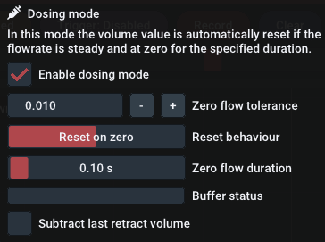

Advanced Usage#
This chapter describes features that have emerged from special use cases. If you have a special data logging application that requires some additional features, please contact us so that it can be added to future versions of EasyGraph.
Dose Mode#
Dosing mode is a special mode selectable through the Data logging menu.
Dosing mode is designed for volume measurement of dosing shots. The volume value is automatically recorded and reset if the flowrate is steady and at zero for a certain duration.
The following data will be logged for each shot:
* "Shot no."
* "End-Volume [ml]" (Total)
* "Max. Δp [bar]"
* "Max. Flowrate [ml/min]"
* "Time stamp"
* "Dose volume [+] [ml]"
* "Pullback volume [-] [ml]"
Demo video of a dosing application with dots

To make use of this mode, please note that the following application requirements are met:
- Hardware = Log.flow (preferred: analog version)
- Flowmeter connected to Input 1/master input
After enabling Dosing Mode additional settings appear:
Zero flow tolerance: Describes the absolute tolerance for the frequency/flowrate value that is interpreted as "zero flow"
Reset behaviour: Choose your intended volume reset behaviour. The two options are Reset on zero and Reset on first non-zero.
Zero flow duration: Specifies the time that the flow has to be below zero tolerance in order to be considered as "zero flow" and consequently resets the volume
Buffer status: The buffer contains a history of samples to check whether the flow is below the specified zero tolerance for the whole duration. If the buffer is full, you can start dosing.
Subtract last retract volume: Last retract volume will be subtracted from end-volume and dose-volume. This can be enabled to log the positive dosing volume only.
Dose-Mode Excel-Files are export-only
The Excel-Files exported using Dosing Mode can not be re-imported into EasyGraph. You have to do all further processing and viewing in Excel.